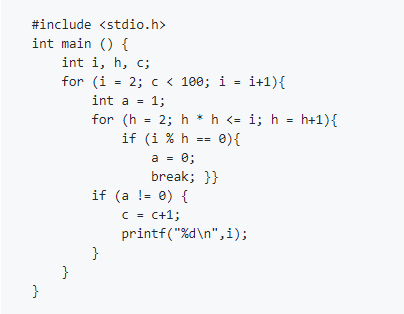
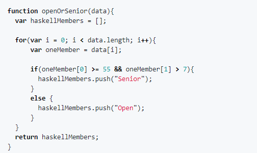

Julia Frill
- Email: juliafrill2000@gmail.com
- Discord: @juliafrill#1708
- Telegram: @astyOOO
Intro
Hello, my name is Julia, I am just a girl who lives in the south of Chile.
My main goal for 2021-2022 is to become a web developer, create a good portfolio and prove to myself that I can achieve this thanks to my perseverance. From birth, I have a tendency to calm mental work, so I tried myself in various areas of programming. I love to learn and usually understand on the fly any new information, therefore, at the moment I am going through the initial stage of the course on web development – in which I’m interested in.
When I am not interested in something, it is very difficult for me to force myself to learn something, but when there is interest and a wish to do, I will keep trying until I understand.
Knowledge and skills
Programming languages- C – basics
- JavaScript
- Responsive website layout, HTML5, CSS3, as well as basic knowledge of JavaScript/JQuery
- Git
- Bootstrap
- EJS
| Russian - | native speaker |
| Spanish - | native speaker |
| English - | level B1-B2 |
Education - Incomplete secondary general education. “Examenes Libres” (state correspondence examinations). Independent education.
Code time
Eratosthenes task solution in C

Kata. The Western Suburbs Croquet Club solution in JSCategorize New Member Kata

Basics of NodeJS, Express and EJS package. My server
const express = require("express");
const bodyParser = require("body-parser");
const date = require(__dirname + "/date.js")
const app = express();
let items = ["Buy Food", "Eat Food", "Cook Food"];
let workItems = [];
app.set('view engine', "ejs");
app.use(bodyParser.urlencoded({ extended: true }));
app.use(express.static("public"))
app.get("/", function (req, res) {
let day = date.getDate();
res.render("list", {listTitle: day, newListItems: items });
});
app.post("/", function (req, res) {
let item = req.body.newItem;
if (req.body.button === "Work"){
workItems.push(item);
res.redirect("/work");
} else {
items.push(item);
res.redirect("/");
}
});
app.get("/work", function(req, res){
res.render("list", {listTitle: "Work list", newListItems: workItems});
});
app.post("/work", function(req, res){
let item = req.body.newItem;
workItems.push(item);
res.redirect("/work");
});
app.get("/about", function(req, res){
res.render("about");
});
app.listen(3000, function () {
console.log("Server started on port 3000.");
});
Education and Projects
Before the course in RS school i have passed The Complete Web Development Bootcamp course on Udemy.
And also a year ago I was studying about C by completing this course (Основы программирования на C) on Stepik, after which I solved problems and watched videos on YouTube.
You can see my other works in my Portfio on Google Drive.